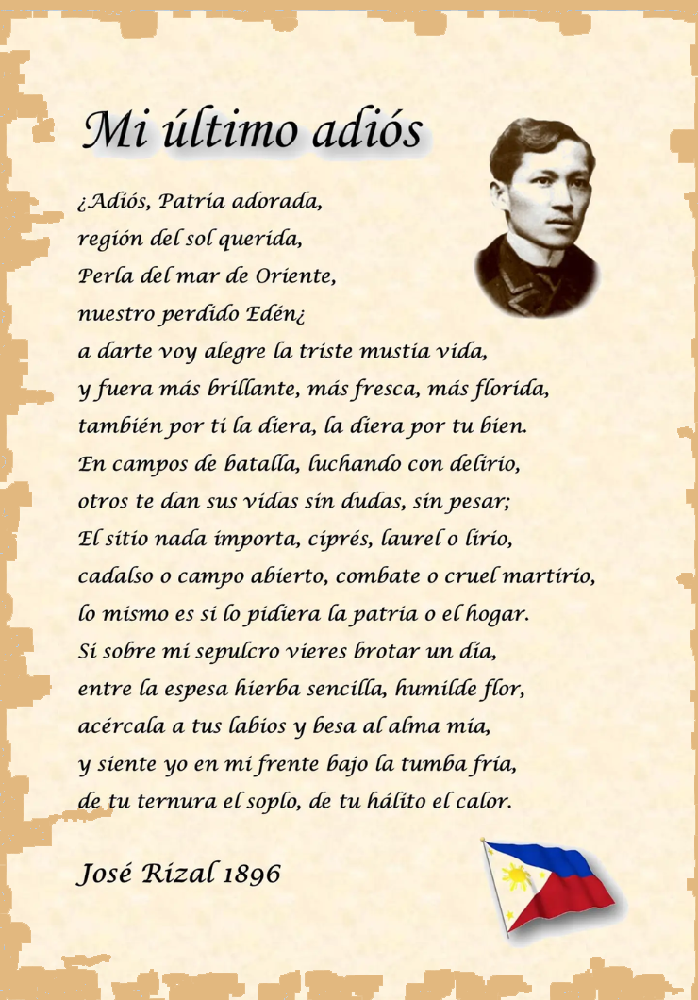

Rizal's Major Work
Mi Último Adiós
Mi Último Adiós, meaning “My Last Farewell, ” is a poem associated with Rizal’ s final hours before his execution on December 30, 1896. In the poem, Rizal expressed his deep love for the Philippines and his willingness to sacrifice his life for his country.
The poem reflects his patriotism, courage, hope, and willingness to serve the Filipino people even in death.
Main Themes:
- Love of country
- Sacrifice
- Patriotism
- Freedom
- Hope
- Devotion to the Filipino people

